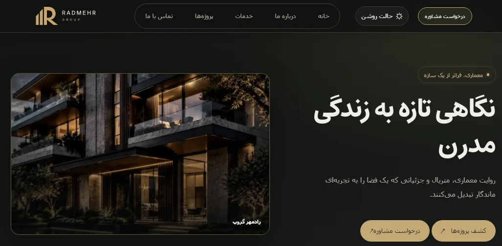
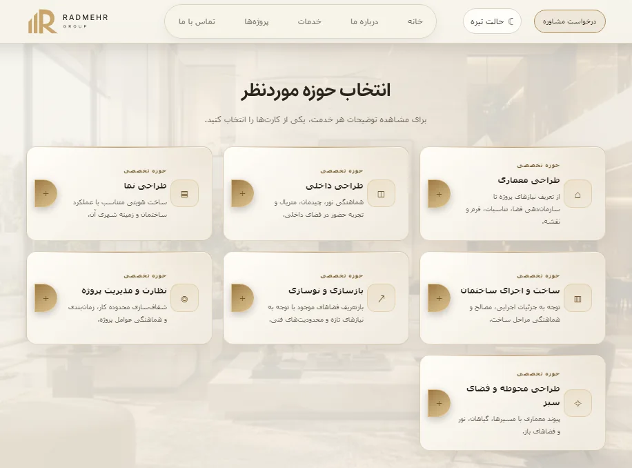
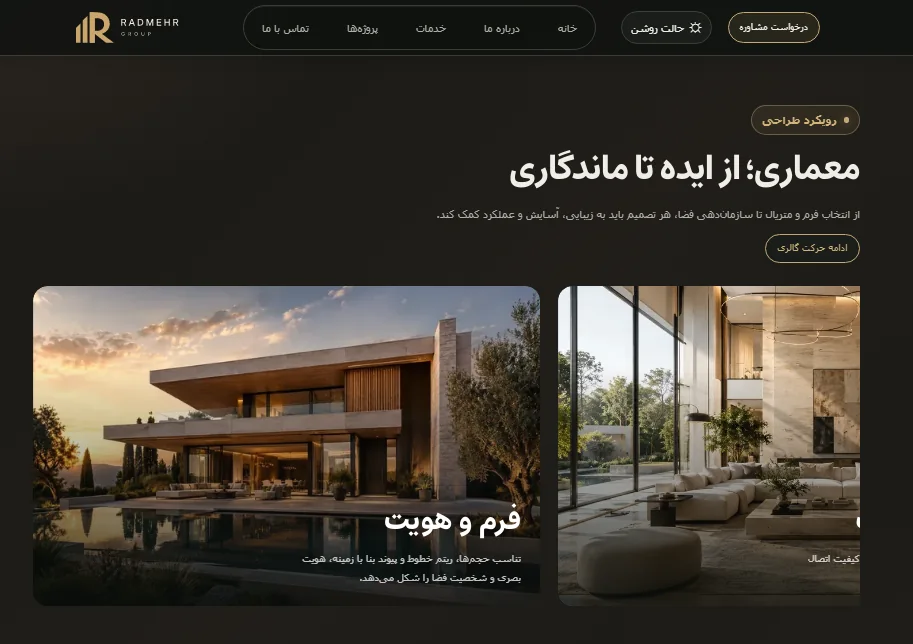
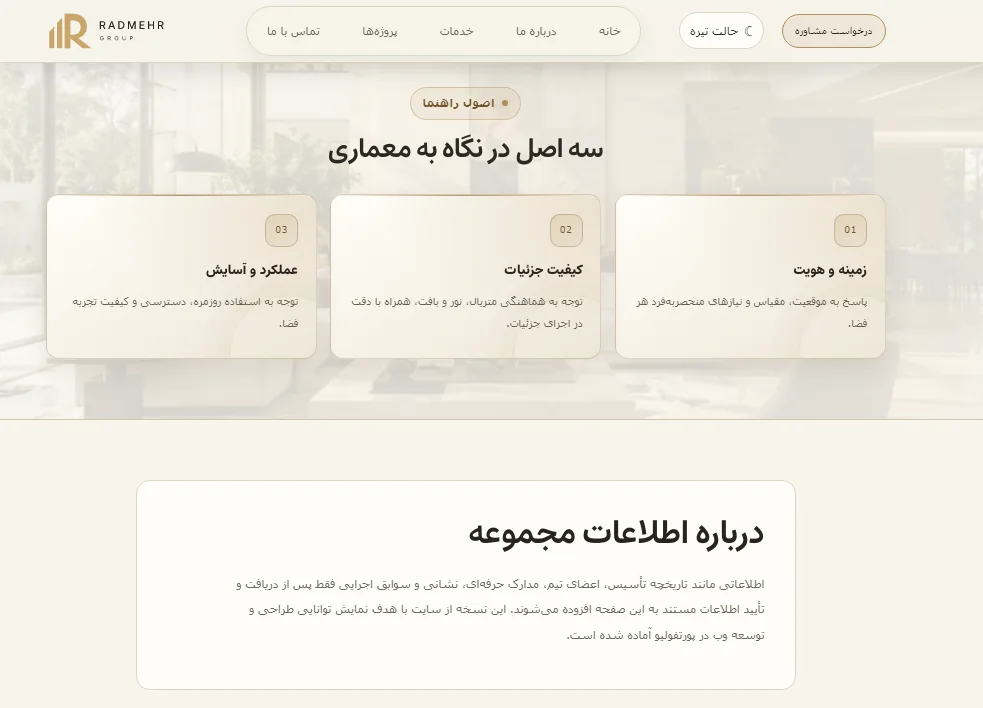
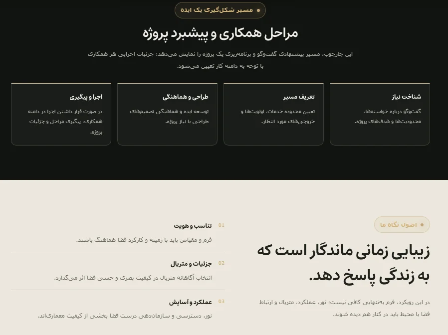

ساختاردهی محتوا
تبدیل خدمات متنوع به بخشهای قابلفهم و قابلمرور، با مسیر مشخص میان معرفی، خدمات و پروژهها.
مطالعه موردی · پروژه مفهومی
طراحی رابط و توسعهٔ فرانتاند یک وبسایت مفهومی برای معرفی مجموعهای چندتخصصی در معماری و ساختوساز؛ با تمرکز بر روایت بصری، ساختار روشن خدمات و مسیر ارتباطی قابلدسترس.

01 / معرفی پروژه
رادمهر گروپ یک پروژهٔ مفهومی در حوزهٔ معماری، طراحی داخلی و ساختوساز است. هدف این مطالعه، طراحی یک وبسایت معرفی بود که بتواند گسترهٔ خدمات مجموعه را به تجربهای روشن و منسجم تبدیل کند؛ تجربهای که ابتدا هویت و رویکرد برند را معرفی کند، سپس مسیر شناخت خدمات و پروژهها را پیش روی مخاطب بگذارد و در نهایت او را به راه ارتباطی مناسب هدایت کند.
تبدیل خدمات متنوع به بخشهای قابلفهم و قابلمرور، با مسیر مشخص میان معرفی، خدمات و پروژهها.
بهکارگیری کنتراست، رنگهای کنترلشده و تصاویر معماری برای شکلدادن به فضایی حرفهای و متمایز.
قرار دادن فرم و اطلاعات تماس در ادامهٔ مسیر محتوا تا اقدام بعدی برای مخاطب قابلتشخیص باشد.
02 / زبان طراحی
زبان بصری رادمهر گروپ بر پایهٔ دو فضای مکمل شکل گرفته است: تم تیره با تأکید بر عمق، کنتراست و جزئیات طلایی؛ و تم روشن با پسزمینهٔ آرامتر برای بخشهایی که به مطالعه و مرور محتوا نیاز دارند. این دو حالت قرار نیست دو هویت جدا باشند؛ هر دو از یک منطق تایپوگرافی، فاصلهگذاری و ترکیببندی پیروی میکنند.
تصاویر معماری نقش عنصر اصلی را بر عهده دارند و رابط کاربری با قابها، کارتها و فضای خالی به آنها نظم میدهد. تیترها برای ایجاد سلسلهمراتب روشن تنظیم شدهاند و متنهای توضیحی با طول و فاصلهٔ مناسب، امکان مرور سریع و مطالعهٔ عمیقتر را در کنار هم فراهم میکنند.
۰۳ / گشتوگذار در وبسایت
بهجای نمایش یک اسکرینشات منفرد، این بخش مسیر مشاهدهٔ وبسایت را روایت میکند؛ از نخستین برخورد با هویت مجموعه تا شناخت خدمات، مرور پروژهها و رسیدن به مسیر ارتباط. این گالری شامل ۱۳ نمای ثبتشده از نسخهٔ ارائهشدهٔ وبسایت است.










04 / معماری اطلاعات
ساختار صفحهها از نیازهای اصلی مخاطب پیروی میکند: شناخت مجموعه، بررسی توانمندیها، دیدن نمونهها و پیدا کردن راه تماس.
حوزههایی مانند طراحی معماری و داخلی، اجرا و ساخت، طراحی نما، بازسازی، نظارت و مدیریت پروژه و طراحی فضای سبز در گروههای مشخص ارائه میشوند تا مخاطب بتواند سریعتر به موضوع موردنظر برسد.
صفحهٔ پروژهها با معرفی تصویری و کارتهای مجزا، امکان مرور نمونهها و دریافت یک برداشت اولیه از نوع نگاه و دامنهٔ فعالیت مجموعه را فراهم میکند.
بخش دربارهٔ مجموعه و اصول طراحی، لایهٔ توضیحی لازم را به تصاویر و خدمات اضافه میکند و به مخاطب کمک میکند با رویکرد مجموعه آشنا شود.
فرم تماس و اطلاعات ارتباطی، مسیر بعدی را مشخص میکنند. نمای تأیید نیز بهعنوان بخشی از تجربهٔ رابط برای بازخورد به کاربر در نظر گرفته شده است.
05 / اجرا و تصمیمهای فنی
ساختار شبکهای و اندازههای منعطف کمک میکنند محتوا در عرضهای مختلف بازچینی شود؛ در صفحههای کوچکتر، اولویت با خوانایی متن، دسترسی کنترلها و ترتیب منطقی بخشهاست.
منوی موبایل، تغییر تم و حرکت میان بخشها برای سادهکردن دسترسی طراحی شدهاند. حرکتهای بصری باید نقش راهنما داشته باشند، نه اینکه توجه را از محتوا بگیرند.
در ارائهٔ این مطالعهٔ موردی، اسکرینشاتها به WebP تبدیل و با بارگذاری تنبل در بخشهای پایین صفحه نمایش داده میشوند تا حجم اولیهٔ صفحه کنترل شود.
06 / فناوری و نقش من
تمرکز این صفحه بر طراحی و پیادهسازی فرانتاند است؛ از ساختار معنایی صفحات تا استایلدهی، رفتارهای تعاملی و آمادهسازی محتوا برای نمایش در دستگاههای مختلف.
طراحی ساختار صفحات و مسیر محتوا، پیادهسازی رابط کاربری، تنظیم سبک بصری، توسعهٔ تعاملهای سمت کاربر و بررسی نمایش در اندازههای مختلف صفحه.
پایان مطالعهٔ موردی
این پروژه فرصتی بود برای کار روی پیوند میان هویت بصری، معماری اطلاعات و توسعهٔ فرانتاند؛ از نخستین تصویر صفحه تا ساختار معرفی خدمات، مرور پروژهها و مسیر ارتباط. نتیجه، یک نمونهٔ مفهومی است که تصمیمهای طراحی و توانایی پیادهسازی رابط را در قالب یک تجربهٔ کامل نشان میدهد.